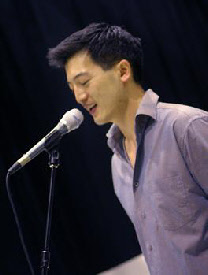

Gig Guide:
To be added to Paul’s mailing list for regular email updates on upcoming gigs, please click here.
Alternatively, to contact Paul directly, please do so via the Contact page.
Venues/events that Paul has appeared at include:
To be added to Paul’s mailing list for regular email updates on upcoming gigs, please click here.
Alternatively, to contact Paul directly, please do so via the Contact page.
Venues/events that Paul has appeared at include:
-
-
- The New Orleans Cafe
- The Lane Cove Club
- Soup Plus
- Redfern RSL
- Paddington RSL
- The Strawberry Hills Hotel